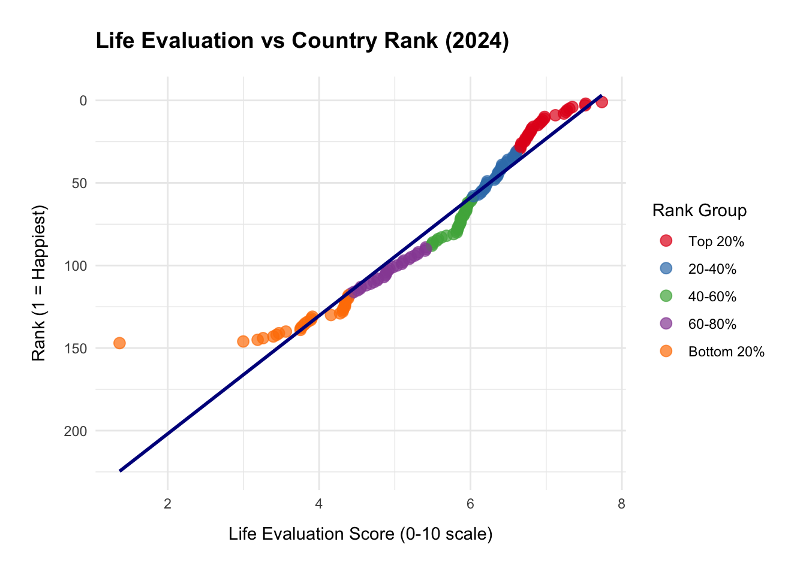
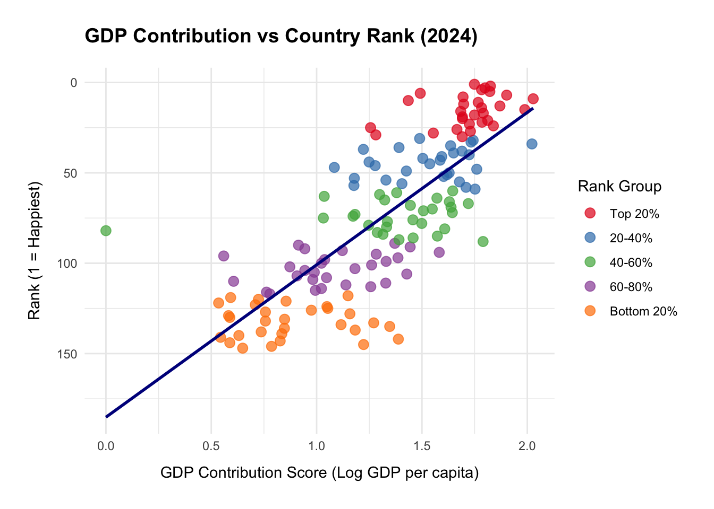
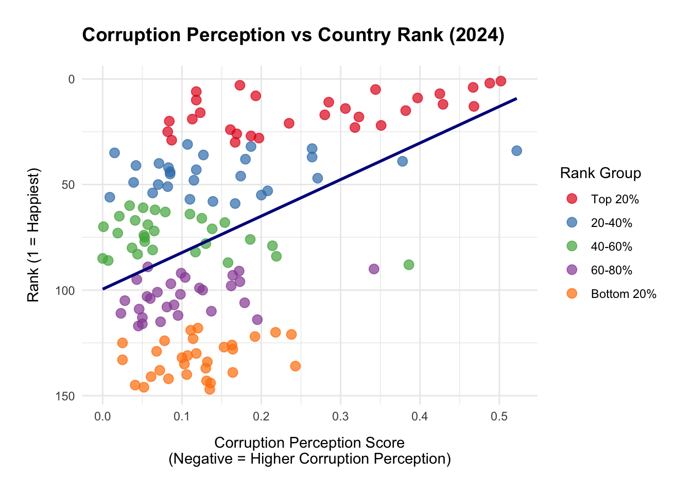

| Dataset Overview | Value |
|---|---|
| Total countries analyzed | 147 |
| Life evaluation score range | 1.36 to 7.74 |
| Average life evaluation score | 5.58 |
| Average GDP contribution | 1.32 |
| Average corruption perception | 0.15 |
World Happiness Index: Exploring Key Determinants of National Happiness
Introduction
This report analyzes and examines the 2024 World Happiness Report data to understand how key factors, specifically life evaluation, economic prosperity (GDP) and governance (corruption perception), influence a country’s happiness rankings. Our research questions are:
- Life Evaluation vs Rank: How does the citizens’ overall life satisfaction correlate with their country’s happiness ranking?
- Economic Influence: What is the relationship between GDP per capita and national happiness ranking?
- Governance Impact: How does corruption perception affect happiness ranking?
This analysis employs Exploratory Data Analysis techniques to find different relationships in data and provide insights into what contribute to a nation’s happiness index.
Data Provenance and Ethical Considerations
Data Source and Selection
The data for this analysis originates from the World Happiness Report 2024 dataset, which contains annual data from 2011 through 2024. For this study, we specifically extracted and analyzed the 2024 data subset only to examine the patterns in national happiness determinants. The complete dataset is publicly available as an Excel file titled “World Happiness Report Data Figure 2.1.xlsx” containing the “Data for Figure 2.1 (2011–2024)” sheet.
FAIR Principles
Find-able: The data is publicly available through the World Happiness Report website.
Accessible: Data is available in a Excel with clear documentation.
Inter-operable: Uses standard variables and scales that are compatible with a social science research
Reusable: Comes with a detailed methodology (a planning document) report
CARE Principles
Collective Benefit: The data helps with the understanding of well-being for policy implementation.
Authority to Control: The original data collected by Gallup World Poll, an ongoing global survey that tracks worldwide ongoing issues.
Responsibility: Published with transparency that includes a methodology and limitations.
Ethics: Using ethical research standards to uphold privacy protection.
Summary Statistics
This dataset includes 147 countries.
Visualization
1. Life Evaluation vs Country Rank
| Rank Group | Number of Countries | Avg. Life Evaluation | Min | Max | STDEV |
|---|---|---|---|---|---|
| Top 20% | 30 | 6.96 | 6.63 | 7.74 | 0.30 |
| 20-40% | 29 | 6.34 | 6.03 | 6.61 | 0.17 |
| 40-60% | 29 | 5.82 | 5.49 | 6.01 | 0.16 |
| 60-80% | 29 | 4.94 | 4.42 | 5.41 | 0.30 |
| Bottom 20% | 30 | 3.85 | 1.36 | 4.39 | 0.63 |

See the table (?@tbl-life-eval) and figure (?@fig-life-plot).
Interpretation: This analysis shows a strong positive relationship between a country’s average life evaluation score and its overall happiness ranking. Countries in the Top 20% have the highest life evaluation (around 6.90). Those in the Bottom 20% score much lower with a score of approximately 3.80. This pattern is consistent across all rank groups as shown in ?@tbl-life-eval. The scatter plot ?@fig-life-plot displays a fitted line that matches the table shown. The upward-sloping line shows that life evaluation is a strong predictor of a country’s happiness rank.
2. GDP Contribution vs Country Rank
| Rank Group | Number of Countries | Avg. GDP Contribution | Min | Max | STDEV |
|---|---|---|---|---|---|
| Top 20% | 30 | 1.72 | 1.26 | 2.03 | 0.17 |
| 20-40% | 29 | 1.53 | 1.08 | 2.02 | 0.22 |
| 40-60% | 29 | 1.38 | 0.00 | 1.79 | 0.33 |
| 60-80% | 29 | 1.09 | 0.56 | 1.58 | 0.25 |
| Bottom 20% | 30 | 0.88 | 0.54 | 1.39 | 0.26 |

Interpretation: The ?@tbl-gdp-rank and ?@fig-gdp-vs-rank show that as GDP and rank have a relatively strong, positive, linear relationship. This means that as GDP increases then so will rank. This means that countries that have higher GDP are more likely to have a higher rank and be more well off. If a country is struggling to create world wide markets, new goods, and build capital, than their government and people are going to struggle. This means the output of the country will be lower and thus rank will reflect this. You want your country to have a high GDP!
3. Corruption Perception vs Country Rank
| Rank Group | Number of Countries | Avg. Corruption | Min | Max | STDEV |
|---|---|---|---|---|---|
| Top 20% | 30 | 0.27 | 0.08 | 0.50 | 0.14 |
| 20-40% | 29 | 0.15 | 0.01 | 0.52 | 0.11 |
| 40-60% | 29 | 0.09 | 0.00 | 0.39 | 0.08 |
| 60-80% | 29 | 0.10 | 0.02 | 0.34 | 0.07 |
| Bottom 20% | 30 | 0.12 | 0.03 | 0.24 | 0.06 |

Interpretation: Overall, both the ?@tbl-corruption-rank and the ?@fig-corruption-vs-rank for corruption perception vs country rank in the world happiness report indicates a positive relationship, as in, the higher score of corruption perception will correlate to a higher rank in the world happiness report. Specifically, it is visually apparent that countries with a lower happiness, those in the bottom 50%, almost all of them would have a lower corruption perception score, although it does seem like within these countries, a lower happiness would skew the corruption perception score higher. Among those in the top 25% of world happiness report, countries are fairly spread out in terms of their corruption perception score, however, similar to the lower 50% of the ranks, those with a higher tank are more likely to have a higher corruption perception score.
Discussion and Conclusions
Key Findings
Life Evaluation: Life evaluation is the one of the strongest predictor of a happiness rank. Countries with higher average life evaluation scores appear in higher happiness ranks. This forms an almost perfect linear relationship.
Economic Foundation: Higher GDP contribution strongly correlates to better happiness rankings. Wealthier countries tend to provide better living standards for their citizens. This supports the national well-being.
Governance Importance: Countries with higher corruption perception scores generally rank higher in happiness. This shows that trust in government is most likely linked to national well-being.
Limitations and Future Research
Limitations:
Data Constraints: The dataset relies on a self reported survey by Gallup World Poll. This may include bias, uneven sampling, and even cultural differences in how people perceive satisfaction.
Variable Simplicity: Factors like GDP, social support and governance are represented by a singular metric which could oversimplify what reality is like.
Correlation ≠ Causation: The key metrics used above simply show the relationships with happiness rankings. They do not prove that there is a causation on higher happiness rankings.
Future Research:
Cultural Comparisons: Examine how different culture groups may highlight the differences in how happiness is influenced.
Additional Key Metrics: Other factors such as education access, healthcare access, political stability, etc. may influence happiness.
Code Appendix
This appendix contains all R code used in the analysis.
## 1. DATA WRANGLING AND PREPARATION
::: {.cell}
```{.r .cell-code}
# Wrangling Code that will not be shown when rendered
# CODE STYLEL GUIDE: Tidyverse Style Guide
# PRIMARY AUTHOR: Nguyen Ngo
# REVIEWER: Jenny Tong
# STEP 1: Load required pacakges
library(tidyverse)
library(readxl) # read excel file
library(janitor)
# STEP 2: Load and clean the Excel dataset
happiness_raw <- read_excel(
"World Happiness Report Data Figure 2.1.xlsx",
sheet = "Data for Figure 2.1 (2011–2024)"
) %>%
# standardize column names
clean_names()
# STEP 3: Filter for 2024 data
# select important columns
happiness_2024 <- happiness_raw %>%
filter (year == 2024) %>%
# rename columns
select(
country = country_name,
rank,
life_evaluation = life_evaluation_3_year_average,
gdp = explained_by_log_gdp_per_capita,
social_support = explained_by_social_support,
health_life_expectancy = explained_by_healthy_life_expectancy,
freedom = explained_by_freedom_to_make_life_choices,
generosity = explained_by_generosity,
corruption = explained_by_perceptions_of_corruption,
dystopia_residual
) %>%
# fix incomplete rows and convert ranks to integers
mutate(
rank = as.integer(rank),
across(c(life_evaluation:corruption), as.numeric)
) %>%
filter(!is.na(rank), !is.na(life_evaluation))
# STEP 4: Calculate the Sensitivity Metrics
happiness_sensitivity <- happiness_2024 %>%
# order by descending life evaluation
arrange(desc(life_evaluation)) %>%
mutate(
life_eval_diff = life_evaluation - lead(life_evaluation),
rank_diff = rank - lead(rank),
sensitivity = abs(rank_diff / life_eval_diff), # measures sensitivity
sensitivity_group = cut(sensitivity,
breaks = c(0, 5, 10, 20, Inf),
Labels = c("Low", "Medium", "High", "Very High")
)
) %>%
filter(!is.na(sensitivity)):::
2. SUMMARY STATISTICS
# PRIMARY AUTHOR: Nguyen Ngo
# REVIEWER: All
# STEP 5: Create a Summary Table
summary_table <- data.frame(
`Dataset Overview` = c(
"Total countries analyzed",
"Life evaluation score range",
"Average life evaluation score",
"Average GDP contribution",
"Average corruption perception"
),
Value = c(
# total countries
as.character(nrow(happiness_2024)),
# life evaluation range
paste(round(min(happiness_2024$life_evaluation), 2), "to",
round(max(happiness_2024$life_evaluation), 2)),
# average life evaluation
paste(round(mean(happiness_2024$life_evaluation), 2)),
# average GDP contribution
paste(round(mean(happiness_2024$gdp, na.rm = TRUE), 2)),
# average corruption (higher = less corruption perceived)
paste(round(mean(happiness_2024$corruption, na.rm = TRUE), 2))
)
)
# STEP 6: Display
knitr::kable(summary_table,
col.names = c("Dataset Overview", "Value"),
align = c("l", "l"),
caption = "Summary Statistics: World Happiness Report 2024 Dataset")3. VISUALIZATIONS
3.1 Life Evaluation vs Country Rank
# PRIMARY AUTHOR: Nguyen Ngo
# REVIEWER: All
#| label: tbl-life-eval
#| tbl-cap: "Life Evaluation Statistics by Rank Group"
# Create rank groups first
happiness_2024 <- happiness_2024 %>%
mutate(
rank_group = cut(rank,
breaks = quantile(rank, probs = seq(0, 1, 0.2)),
labels = c("Top 20%", "20-40%", "40-60%", "60-80%", "Bottom 20%"),
include.lowest = TRUE)
)
# Create the summary table
life_eval_summary <- happiness_2024 %>%
group_by(`Rank Group` = rank_group) %>%
summarize(
`Number of Countries` = n(),
`Avg. Life Evaluation` = round(mean(life_evaluation, na.rm = TRUE), 2),
`Min` = round(min(life_evaluation, na.rm = TRUE), 2),
`Max` = round(max(life_evaluation, na.rm = TRUE), 2),
`STDEV` = round(sd(life_evaluation, na.rm = TRUE), 2)
) %>%
arrange(`Rank Group`)
knitr::kable(life_eval_summary)# PRIMARY AUTHOR: Nguyen Ngo
# REVIEWER: Jenny Tong, Ava Walters
#| label: fig-life-plot
#| fig-cap: "Life Evaluation vs Country Rank"
#| fig-alt: "Scatter plot showing life evaluation scores on x axis and
#| country ranks on y axis. Points are color-coded by rank groups."
ggplot(happiness_2024, aes(x = life_evaluation, y = rank)) +
geom_point(aes(color = rank_group), size = 3, alpha = 0.7) +
geom_smooth(method = "lm", se = FALSE, color = "darkblue", linewidth = 1) +
scale_y_reverse() + # Reverse so rank 1 is at top
scale_color_brewer(palette = "Set1", name = "Rank Group") +
labs(
title = "Life Evaluation vs Country Rank (2024)",
x = "Life Evaluation Score (0-10 scale)",
y = "Rank (1 = Happiest)"
) +
theme_minimal() +
theme(
plot.title = element_text(face = "bold", size = 14, margin = margin(b = 15)),
axis.title.x = element_text(margin = margin(t = 10)), # Move x-axis label down
axis.title.y = element_text(margin = margin(r = 10)), # Move y-axis label right
legend.position = "right",
plot.margin = margin(20, 20, 20, 20) # Add margin around entire plot
)3.2 GDP Contribution vs Country Rank
# PRIMARY AUTHOR: Ava Walters
# REVIEWER: Nguyen Ngo
#| tbl-cap: "GDP Contribution Statistics by Rank Group"
# Create GDP summary table
gdp_summary <- happiness_2024 %>%
group_by(`Rank Group` = rank_group) %>%
summarize(
`Number of Countries` = n(),
`Avg. GDP Contribution` = round(mean(gdp, na.rm = TRUE), 2),
`Min` = round(min(gdp, na.rm = TRUE), 2),
`Max` = round(max(gdp, na.rm = TRUE), 2),
`STDEV` = round(sd(gdp, na.rm = TRUE), 2)
) %>%
arrange(`Rank Group`)
knitr::kable(gdp_summary)# PRIMARY AUTHOR: Ava Walters
# REVIEWER: Nguyen Ngo
#| fig-cap: "GDP Contribution vs Country Rank"
#| fig-alt: "Scatter plot showing GDP contribution scores on x axis and
#| country ranks on y axis. Points are color-coded by rank groups."
ggplot(happiness_2024, aes(x = gdp, y = rank)) +
geom_point(aes(color = rank_group), size = 3, alpha = 0.7) +
geom_smooth(method = "lm", se = FALSE, color = "darkblue", linewidth = 1) +
scale_y_reverse() +
scale_color_brewer(palette = "Set1", name = "Rank Group") +
labs(
title = "GDP Contribution vs Country Rank (2024)",
x = "GDP Contribution Score (Log GDP per capita)",
y = "Rank (1 = Happiest)"
) +
theme_minimal() +
theme(
plot.title = element_text(face = "bold", size = 14, margin = margin(b = 15)),
axis.title.x = element_text(margin = margin(t = 10)), # move x-axis label down
axis.title.y = element_text(margin = margin(r = 10)), # move y-axis label right
legend.position = "right",
plot.margin = margin(20, 20, 20, 20) # add margin around entire plot
)3.3 Corruption Perception vs Country Rank
# PRIMARY AUTHOR: Jenny Tong
# REVIEWER: Nguyen Ngo
#| tbl-cap: "Corruption Perception Statistics by Rank Group"
library(dplyr)
# create the summary table for corruption
corruption_summary <- happiness_2024 %>%
group_by(`Rank Group` = rank_group) %>%
summarize(
`Number of Countries` = n(),
`Avg. Corruption` = round(mean(corruption, na.rm = TRUE), 2),
`Min` = round(min(corruption, na.rm = TRUE), 2),
`Max` = round(max(corruption, na.rm = TRUE), 2),
`STDEV` = round(sd(corruption, na.rm = TRUE), 2)
) %>%
arrange(`Rank Group`)
knitr::kable(corruption_summary)# PRIMARY AUTHOR: Jenny Tong
# REVIEWER: Nguyen Ngo
#| fig-cap: "Corruption Perception vs Country Rank"
#| fig-alt: "Scatter plot showing corruption perception scores on x axis
#| and country ranks on y axis. Points are color coded by rank groups."
ggplot(happiness_2024, aes(x = corruption, y = rank)) +
geom_point(aes(color = rank_group), size = 3, alpha = 0.7) +
geom_smooth(method = "lm", se = FALSE, color = "darkblue", linewidth = 1) +
scale_y_reverse() + # Reverse so rank 1 is at top
scale_color_brewer(palette = "Set1", name = "Rank Group") +
labs(
title = "Corruption Perception vs Country Rank (2024)",
x = "Corruption Perception Score\n(Negative = Higher Corruption Perception)",
y = "Rank (1 = Happiest)"
) +
theme_minimal() +
theme(
plot.title = element_text(face = "bold", size = 14, margin = margin(b = 15)),
axis.title.x = element_text(margin = margin(t = 10)),
axis.title.y = element_text(margin = margin(r = 10)),
legend.position = "right",
plot.margin = margin(20, 20, 20, 20)
)Data comes from the World Happiness Report (Helliwell et al.) and the dataset is provided by SDSN (Sustainable Development Solutions Network). Polling data come from Gallup (Gallup World Poll).
References
Gallup World Poll. World Happiness Report Data Figure 2.1: 2011–2024. Excel file, analysis conducted on 2024 subset, 2024.
Helliwell, John F., et al., editors. World Happiness Report 2025. University of Oxford: Wellbeing Research Centre, 2025.
Sustainable Development Solutions Network. World Happiness Report 2024 - Time Series Data (2011-2024). Data set, 2024, https://www.worldhappiness.report/data-sharing/.